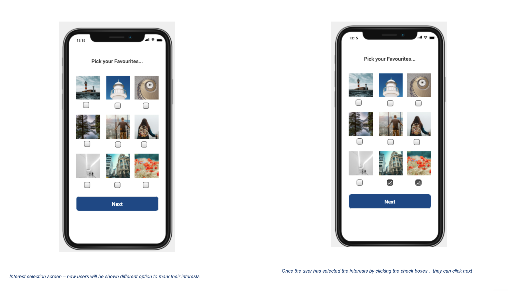
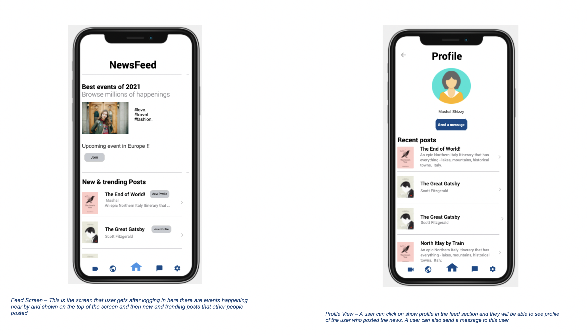
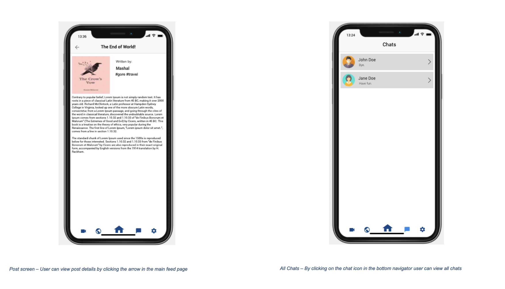

📌 PROJECT SCOPE
- University Project
- Timeframe: 12 weeks
- My Role: UX Researcher
- Methods: Generative research, Workshop facilitation, Storyboards,Journey maps, Personas
- Tools: Figma, usertesting.com, Miro, Digital sketching, Teams
Explore the mental-health and interactions for young adults and the individuals involved in using it
Project Overview
🚀 CLIENT KICK OFF
In the era of COVID-19, the need for meaningful social connections is more critical than ever. Our app seeks to enhance this experience by providing a platform for individuals to meet new friends and discover engaging events. Just as every person's healthcare journey is unique, so too are the pathways to forging connections. Our goal is to make it easier for people to find new friends and exciting events, adapting to their specific needs during these challenging times.
🔎 OBJECTIVES
Enhance Social Connection: Foster social interactions by enabling users to join virtual gatherings, parties, and events, allowing them to meet new people, even when physical meetups are challenging.
Smart Friend Matching: Create a feature that uses user data to suggest potential friends who share similar interests and preferences, helping users make meaningful connections.
Event Discovery and Safety: Develop a platform that helps users find local and online events, with a focus on safety information, ensuring they can make informed decisions about attending events during the pandemic while staying connected with their community.
✏️ NOTES
This was a professional experience project completed for my capstone experience during a semester of my master’s degree curriculum.
📌 Methodology
- Generative Research
- Data Synthesis
- Journey Map & Personas
- Ideation Workshop
- Storyboard Experience

🔎 Generative Research
The Methodology
We selected 4 participants :
The participants of our applications were university students,from different streams, the participants are approx. 20 years to 35 years old. Two of them were from Asia & the other from Europe.
Finalising the participant and scheduling an online call with them.
Steps:
Introduction about the application and the experiment
Filling out the consent form
Giving them the document of the 5 action sequence instructions
Observe the participant performing all the Tasks
Completing the participant questionnaire.
Conducting the semi-structured interview and recording the data.
Conducting NASA TLX questionnaire.
The Process
We used Google Meet for Video Call & the screen was shared in the call.The user would get the screen access so that he/she can control the flow of the app. Then we asked users the interview questions and filled the answers in our Google Docs as we went ahide.
due to the pandemic situation we held either a video call in which we shared the screen and the users were given access to go through the prototype or we did in person maintaining physical distance (and taking other precautions). After the tasks were done we asked them the interview question and the tasks feedback and noted their responses.
How do users currently discover events in their area, and what challenges do they face?
What information do users consider essential when deciding to attend an event during the pandemic?
Generative research findings
Findings
- Around 75 % of participants enjoyed exploring the app and found it interactive and innovative.
- Around 80 % of the participants found the app easy to use, they were able to perform the main functionality of the app and easily access the features of the app without any assistance.
- They also claimed that it was easy for them to redirect to pages and explore the app.
- A few users had difficulty in going back to the previous page from where they were redirected and had to close the app to reach the desired page.
- Users found the icons familiar and easy.
- They could relate and recall the icons and images commonly used in usual apps that they use
- There should have been tooltips in the app somewhere to create ease for the user.
- There should have been a back button in all screens of app to eliminate chances of users being stuck at some point.
- There should have been searching options in all data / chat-related screens.
- There should have been a privacy reated option in the app to show/hide posts from people/groups.
🧑🤝🧑 Personas
Personas were developed after data synthesis of over 10 user interviews. I am showing only 2 personas here.
It is important to note, that these personas do not represent the whole population’s experience, simply those we talked to within the project’s scope which may lean towards a more privileged group of individuals.


🎬 Story Boarding
The storyboard mixed real experiences from the research as well as imagined scenarios where the same solution could impact multiple problems.
Feedback
- Feed & News screen (Story Board) Feedback: According to potential user it is eay to reach the Feed & News screen by the bottom navigation given in all screens of application the interests of users are already saved when user signup very first time so the app don’t ask every time for interests, although user can edit interests manually by themselves.
- Explore screen (Story Board) Feedback: It is observed by actual users that it is good soure of information that we get from the Mind Alike app “exploring” functionality, because most of the things about which we are unaware that are new in market or newly invented so by using exploring functionality of this app, we get aware of new games, melodies, dresses, current fashion, songs and much more by typing in search bar.
- Jam (Story Board) Feedback: It is observed that “JAM” functionality of the application is the most popular and most of our downloads of app are because of this module in our application this module boost our app downloads, because in this current situation even it’s a Christmas and new year we are totally in our home and got nothing to do social type, so JAM functionality is liked by every user of our app.
🖊️ Lo-fi Designs
🤳🏼 Hi-fi Designs
  
💭 Reflection
Industry Takeaways
In the realm of virtual socialization and friend matching, there exists a dynamic landscape that offers opportunities for innovation even within the constraints of the pandemic. While safety and privacy considerations are paramount, a thoughtful balance between facilitating meaningful connections and adhering to safety protocols can lead to the creation of engaging, user-centric experiences. Moreover, it's vital not to prematurely dismiss innovative ideas; evaluating them within the context of user safety and privacy can lead to advancements that reshape the industry's approach to socialization and connection-building.
Personal Takeaways
I've learned that in user research, providing users with moments to digest information is crucial. This approach can improve the quality of data gathered and make the research process more user-centric.
he use of sketched storyboards and hi-fi components has proven to be a powerful tool for conveying the context of certain features without the need for a complete build-out. This method allows for efficient communication of ideas and context, reducing the time and resources required for full development.